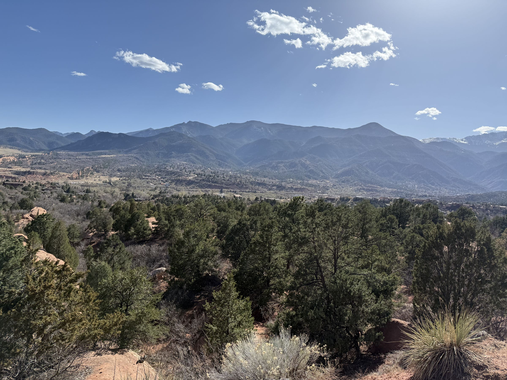
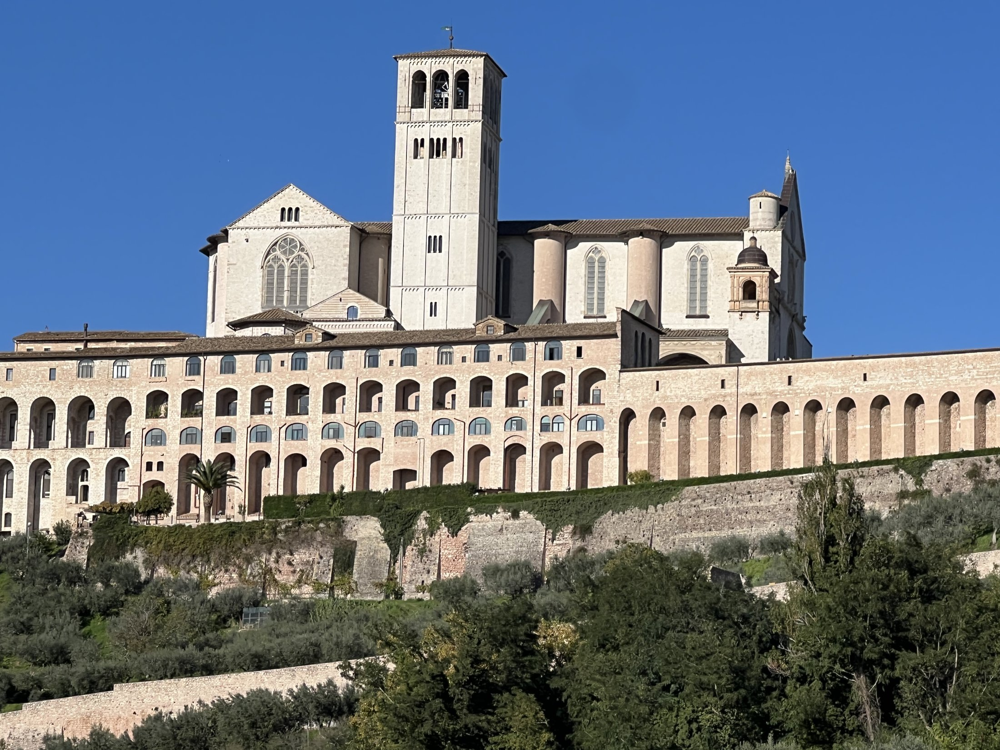
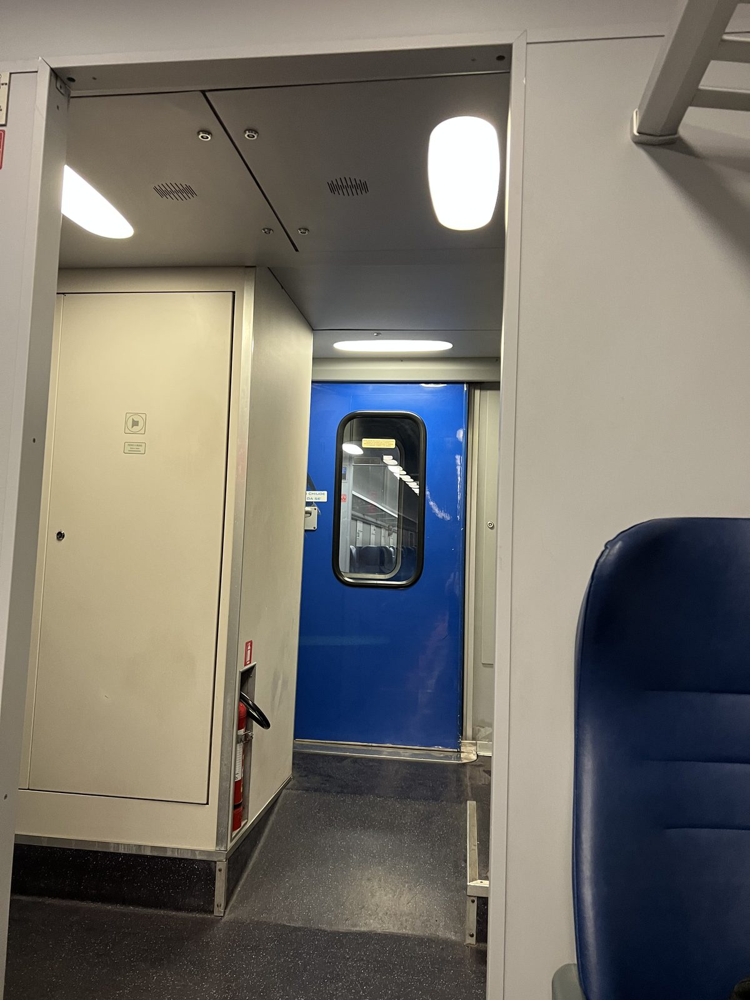
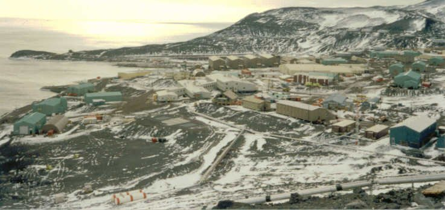
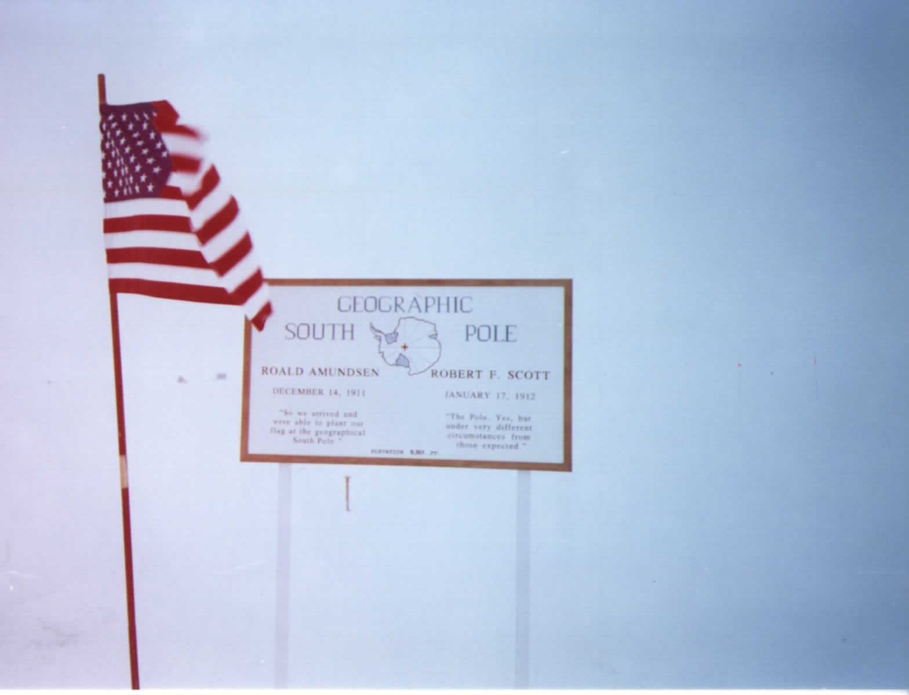

Apr – May 2026
Apr – May 2026
New Zealand 2026
Fourteen days, two islands, one lost day at the date line — skydiving, SkyJumping, Edoras, and a first live kiwi.
 Oct – Nov 2025
Oct – Nov 2025
Italy 2025 — A Jubilee Pilgrimage
A Holy Year on foot and by train: a 13th-century castle in Umbria, the Via di Francesco, and a volunteer's green vest at the Holy Door.

Apr 2025Colorado 2025 — Front Range Homecoming
Twenty years of home in the rearview: Colorado College, the Cripple Creek gold district, Pikes Peak in snow, and the last corn snow of the season.

Oct – Nov 2024Italy 2024 — Return to Umbria
A five-star fortress in Perugia, Assisi after the buses leave, cats running a church, and a train strike finale across Rome.

Nov 2022Assisi 2022 — In the Footsteps of Saint Francis
The first pilgrimage: the Porziuncola, the Basilica of Saint Francis, morning mists over the valley, and San Damiano.
 Apr 1998
Apr 1998
Antarctica 1998 — Vernadsky Station
Zodiacs off the Laurence M. Gould through the sea ice to the Ukrainian base on Galindez Island: a desalination plant, a bar the British left behind, and excellent vodka.

1990 – 1996McMurdo Station — Living and Working on the Ice
Three winter-overs of thirteen months each: writing code for the NSF, the comms link across to Black Island, a chili cookoff in the dark, and a cross at Hut Point that has stood since 1902.

1993 – 1994South Pole Station — A Year at Ninety South
Twenty-seven people under the Dome: a nine-metre dish and a wobbly satellite bringing the first internet to the Pole, a comet hitting Jupiter, neutrino strings in the ice, and the 300 Club.